編著書の紹介
- ＵＰ（東京大学出版会、広報誌）
1. "矢内原と今 --- 理科vs文科"、青木秀夫、UP, No 476 (2012年6月）、p.22。[PDF]
2. "100年、1000年"、青木秀夫、UP, No 483 (2013年1月）、p.18。[PDF]
3. "スイス ― ETH滞在記"、青木秀夫、UP (2019年1月号出版予定）。[PDF] - 超伝導入門 青木秀夫[著] 裳華房(2009)
- 多体電子論Ⅰ 強磁性 青木秀夫[監修] 草部浩一・青木秀夫[著] 1998年 ISBN 4-13-060602-6
- 多体電子論Ⅱ 超伝導 青木秀夫[監修] 黒木和彦・青木秀夫[著] 1998年 ISBN 4-13-060603-4
- 多体電子論Ⅲ 分数量子ホール効果 青木秀夫[監修] 中島龍也・青木秀夫[著] 1999年 ISBN 4-13-060604-2
- Physics Meets Mineralogy: condensed matter physics in geosciences / edited by Hideo Aoki, Yasuhiko Syono, Russell J. Hemley (Cambridge University Press 2000) ISBN 0-521-64342-2
- 相関電子系の物質設計 特集号 「固体物理」2001年10月号
- 「東大教師が新入生に勧める本」 （ＵＰ April 2004掲載；文春新書(2009）に収録）
- グラフェンの機能と応用展望 (2009)
- "Integer quantum Hall effect" in P. Bhattacharya, R. Fornari and H. Kamimura (ed.): Comprehensive Semiconductor Science & Technology (Elsevier, 2011), pp.175-209.
- グラフェンの機能と応用展望II(2012)
- Hideo Aoki and Mildred S. Dresselhaus (ed.): Physics of Graphene (Springer, 2013)
- UT Physics (東京大学出版会)
Hideo Aoki and Mildred S. Dresselhaus (ed.): Physics of Graphene (Springer, 2013)
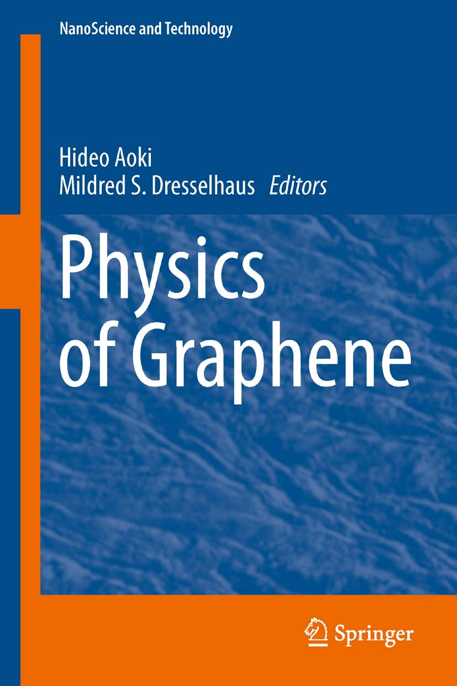
グラフェンが2010年のノーベル物理学賞を受賞したことは記憶に新しいが、 グラフェンの物理の進歩には目を瞠るものがある。物性としても、 特徴的な量子ホール効果だけでなく、質量ゼロのディラック粒子に付随する 特異な性質や、トポロジカルな性質が多彩に開拓されており、実験的にも 様々なタイプの試料が合成されている。この背景を受けて、本書は、 グラフェンの物理の最先端を行く専門家による、この分野の概観を 目指したものである。全部で１０章から成り、実験関連が５章、 理論関連が５章である。それぞれ、教育的な序から、先端までを カバーしており、本書がグラフェンの物理のさらなる進歩への足掛かり となることを期待したい。目次、前書き等は
http://link.springer.com/book/10.1007/978-3-319-02633-6
で見ることができる。
グラフェンの機能と応用展望 II
森本高裕、青木秀夫：第一章「グラフェンの光学特性」（監修：斉木幸一朗、CMC出版 2012）
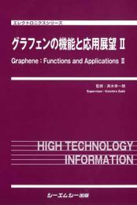
「グラフェンの機能と応用展望」が出版されて３年が経つが、その後の発展をま とめた本書において、グラフェンの光学的性質を解説した章である。磁場中の ディラック粒子の特異な量子ホール効果を反映する磁気光学応答、特に、グラ フェンにおける光学ホール伝導度（ファラデイ回転、カー回転として観測可能） を説く。さらに、２層グラフェンや３層グラフェンについて、層の枚数で劇的に 異なる電子構造が、光学特性に強く反映されることを見る。最後に、グラフェン に円偏光を照射するとゼロ磁場中でもホール効果が起きるという、光誘起トポロ ジカル現象の理論に触れる。
Comprehensive Semiconductor Science & Technology
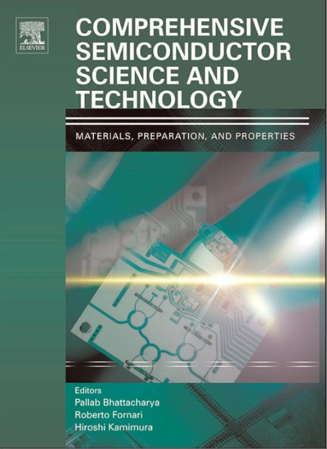
1990年代に出版された"Handbook on Semiconductors" (in 4 vols)の現代版とし
て、各章をミニ教科書的に長くした"Comprehensive Semiconductor Science &
Technology"が出版された。その中の整数量子ホール効果の総合的解説である。
グラフェンの機能と応用展望
青木秀夫：第一章「グラフェンの特異な物理」
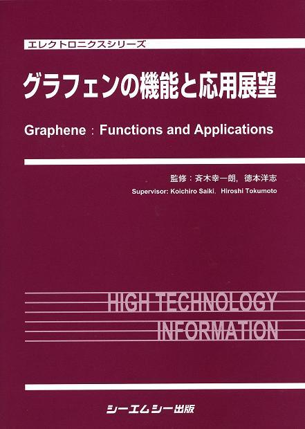
最近、グラフェンの物理が、物性物理学の最もホットなトピックスの一つとして脚光を浴びている。実際、固体物理学の新たな分野を拓く程の隆盛を見せており、基礎物理学（「固体の中のニュートリノ」を実現している）ならびに応用物理学の両面で極めて興味深く、将来性を秘めた系となっている。この解説ではグラフェンの特異な物理を基礎物理学の理論的観点からレビューした。
超伝導入門
青木秀夫[著] 裳華房(2009)
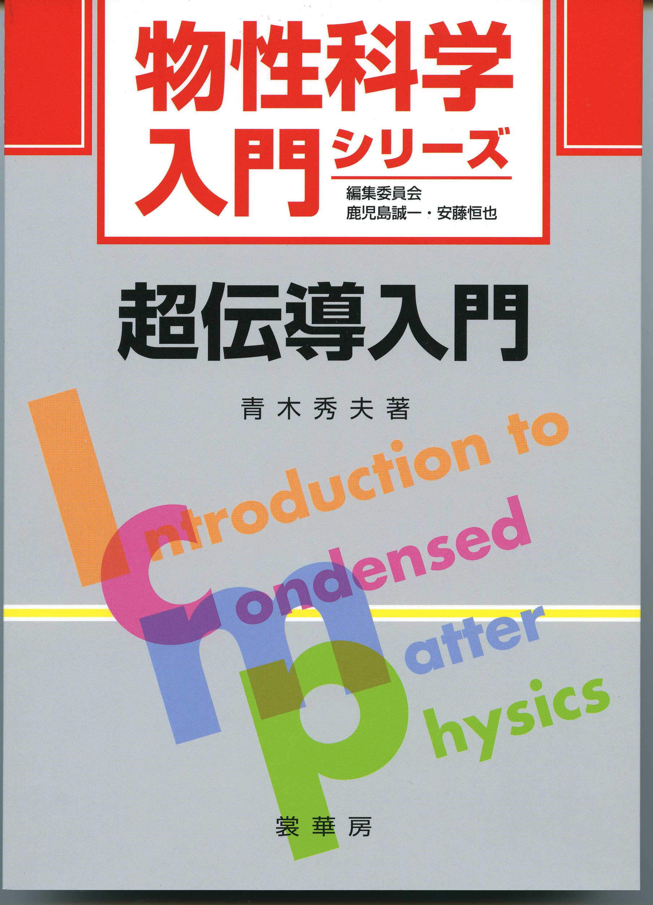
目次- まえがき
- 超伝導とは何か
- 1.1 超伝導研究の歴史
- 1.2 超伝導の基本的性質
- 統計力学の復習と超伝導の現象論
- 2.1 フェルミ気体の復習
- 2.2 Bose-Einstein凝縮の復習
- 2.3 Ginzburg-Landau理論 --- 相転移としての超伝導
- ＢＣＳ理論
- 3.1 フォノン媒介引力
- 3.2 ＢＣＳ理論
- 3.3 ＢＣＳ理論をめぐるいくつかの話題
- 高温超伝導
- 4.1 超伝導の非フォノン機構
- 4.2 高温超伝導の発見
- 4.3 電子構造
- 電子相関と超伝導の電子機構
- 4.1 電子相関とは --- 磁性とモット転移
- 4.2 ハバード模型 --- 最も簡単な相互作用模型
- 4.3 スピン揺らぎ交換による超伝導
- 様々な物質における超伝導
- 6.1 梯子化合物
- 6.2 有機超伝導
- 6.3 電子気体の超伝導
- 6.4 重い電子系
- 6.5 最近の発見
- 6.5 さらにエキゾチックな超伝導
- 超伝導と超流動と量子ホール効果
- 7.1 超流動
- 7.2 量子ホール効果
- 課題と展望
- 8.1 なぜ銅の酸化物なのか
- 8.2 フォノン機構 vs 電子機構
- 8.3 TCを上げるには--- 室温超伝導は可能か？
参考文献
演習問題解答
索引
正誤表は
http://www.shokabo.co.jp/mybooks/ISBN978-4-7853-2915-0.htm
を参照。
なお、正誤を訂正した第２版が2010年6月30日に出版されました。
まえがき(抜粋）
超伝導は、超流動やボース凝縮などと並んで、物理学者の夢が現実化したと 思える程ファンタスティックな世界である。
何が「夢」なのだろうか。超伝導や超流動は、 「巨視的な量子効果」と云われるものである。量子力学というのは、 普通は、原子や分子のように、目で見えるのより何桁も 小さい微小な世界を支配している法則であり、日常の 世界（物理学者はこれを巨視的な世界と呼んでいる）では 量子力学の効果は直接は現れない。ところが、超伝導や超流動 は、この効果が日常的なスケールで現れる稀なものである。 マイスナー効果で特徴付けられる超伝導は、波動関数の位相が 揃っているという意味で、いわば巨大な一個の量子力学的物体（原子） と見なせる。 最近、レーザー冷却された原子におけるBose-Einstein凝縮が話題となり、 ノーベル賞も与えられたが、超伝導は、電子が或る意味でBose-Einstein凝縮 したものであり、Bose-Einstein凝縮の先輩といえる。 但し、「日常的なスケールで量子力学が発現」とはいうものの、 超伝導が実際に起きるのは、 液体ヘリウムという物理の実験室あたりに しかない冷却剤が必要な程、日常感覚でいえば極端に低温での話である。 何とかして超伝導の起きる温度(転移温度）を 上げる、というのは物性物理学の悲願であった。
物質を細かく見ていった究極である素粒子物理学に対して、 物性物理学は原子の集合の性質の示す多彩な現象を探る物理学であるが、 ここにおいても、1980年代から 「革命の連続」と呼ぶ人がいる程の黄金期を迎えていて、 高温超伝導に代表される幾つかの テーマで物性物理学分野のノーベル賞があいついで 輩出した。本書の後半で解説するように、1980年代に銅酸化物において発見された 高温超伝導では、 超伝導という特殊な現象が発生する機構が、ほぼ確実に 電子間の相互作用に起因する 「超伝導の電子機構」という興味深いものであり、 進歩への火蓋が切っておとされた。
つまり、超伝導は電子のペア のボース凝縮であるから電子同士が結晶の音波の量子（フォノン）を 交換して得る引力が必要、という常識があったが、 電子機構においてはクーロン斥力（に付随する磁気揺 らぎ交換）のために高温超伝導しており、 我々の概念の変革を迫る程のブレークスルー であるだけでなく、より高温での超伝導への 路を開く可能性も秘めた画期的なものといえる。
高温超伝導は、このような概念上の革命であるのが意義深く、 実際、高温超伝導は、 「強相関の物理」という新しい分野を拓いた。 電子相関を用いた超伝導においては、原理的には 超伝導が日常の温度(室温)で起きる物質が存在してもよいという 期待をはばむ理由は今のところみあたらず、「室温超伝導」が 実現すれば、間違いなく実用上の革命にもなるであろう。
本書は、超伝導の本質と私が考えるものを、 超伝導を初めて学ぶ方はもとより、既に知っている方にも 自らの考えをまとめるよすがとなるように、執筆したものである。 前半では、従来型の（低温）超伝導において、引力相互作用する電子 系がボース凝縮する（正確にはBCS状態になる） スタンダードな解説を、後半では、高温超伝導体において 斥力相互作用する電子系が（異方的ペアリングと呼ばれる 特別な）超伝導状態になることの解説を行った。 普通の教科書にはあまりない 特徴としては、(a) ゼロ抵抗、ゲージ対称性破れ、BCSギャップの間の関係 のように、普通はあまり詳しく解説されないが、基礎的に重要な 問題を解説したこと、(b) 高温超伝導を、エキゾチックな超伝導と 呼ぶものも含め詳しく解説したこと、(c) 今後の展望として、 より高温超伝導の物質設計（ここは、筆者の独断が 混じる）ということに触れたこと、等である。
読者の対象としては、 理科系の大学学部及び大学院生以上を考えている。 今までに、超伝導については、他大学の大学院集中講義や、 東大での21世紀COE大学院講義で授業をしたり、また学部での統計力学、 固体物理学、理論演習の講義でも触れてきたが、これらに基づいている。 授業する度に感じることであるが、超伝導というのは古くて常に新しい テーマであり、聴講者の目の輝きが違うように思える。
実際、本書の校正刷りを直している時期に、我が国で 鉄化合物において新しい高温超伝導体が細野氏（東工大）により発見 され、銅酸化物高温超伝導体発見時の２０年前を彷彿とさせる フィーバーが起きた。私もこの理論を作ることに共同研究者とともに 早速取り掛かり、 興奮しながら研究を進めたが、校正の時間を捻出するのに 四苦八苦する仕儀となった。この出来事も、超伝導が常に新しい テーマであることを象徴しているようである。 さらに、2008年秋には南部陽一郎先生がノーベル物理学賞を受賞されるという 喜ばしいニュースがもたらされた。南部理論は超伝導に触発されて構築されたものであり、 超伝導が普遍的なテーマであることを象徴する出来事といえる。
多体電子論Ⅰ 強磁性
青木秀夫[監修] 草部浩一・青木秀夫[著]
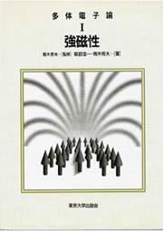
今、物性物理学は一つの黄金期を迎えている。このルネッサンスをもたらした重要な要因は、「黄金の1980年代」に勃発した量子ホール効果や高温超 伝導の物理であろう。多くの人が指摘するように、高温超伝導の意義は、必ずしも高いTcではなく、多体電子系がいかに思いがけない魅惑を秘めているかを我 々に開眼させてくれたことにあろう。ここでは、電子は強く相互作用して互いに連動して避けあっており、「電子相関」の格好の舞台となっている。また、分数 量子ホール効果は、電子を2次元空間に閉じこめ、これに垂直な強磁場を加えたときに、磁場中にある低次元系特有の面白さを最高度に発揮した多体電子系であ る。
そもそも多体電子論といえば、我国で輝かしい歴史を誇る磁性が中心的な柱の一つである。つまり、物質が何故磁石になるのか、という古来から の問題は、実はその完璧な理解がいまだに探られているような大問題となっている。磁性の問題は、別の側面、つまり高温超伝導の電子機構が探られる過程でも 新たな光があてられた。特に、遍歴強磁性、つまり動き回る電子の集合体が磁石になり得るか、という問題は、未だにホットな基本問題である。
このように、量子力学に基づいてバンド理論に基づく固体電子論という物性物理学の基礎ができたのを第一世代、超伝導のBCS理論や近藤問題 のような典型的な量子多体効果の発見が行われたのを第二世代とすると、今は「多体電子論」を一つの中心とする物性物理学の第三世代と云えるかもしれない。 そこでは、伝統的なアプローチをさらに発展させると、量子多体系は強磁性や超伝導や量子ホール効果といった面白い多体効果の宝庫であろうことが垣間見えて くる。また、場の理論や数理物理的厳密解の理論、量子モンテカルロ法など計算機物理学のアプローチなどあらゆる多体問題の解法が試みられる中から、新しい 物理像を模索するという流れが作られている。
全3巻からなる本シリーズ
- 「多体電子論 I 強磁性」
- 「多体電子論 II 超伝導」
- 「多体電子論 III 分数量子ホール効果」
は、このような流れがいかに面白いものであるかを分かり易く、かつ本格的に解説することを目的としている。本書はその第1巻をなすものである。最近では多体効果を個々にモダンな観点から解説した優れた解説や単行書が出版されるようになってきたが、本シリーズの目的は、
- 大学院生や研究者(および進んで知りたい学部生)のために、
- 磁性、超伝導、分数量子ホール効果を、各巻は独立して読めるが、3巻を通読すれば互いに関連したテーマとして理解でき、
- 基礎から最前線までself-containedに解説するが、総花式ではなく著者の物理的描像を柱に通して
解説しようとするところにある。従って、本格的に勉強し先端の生々しい雰囲気に触れようとする向きには勿論、これらのテーマのどこに面白さがあるのかを垣 間見てみようとする学部レベルの読者にも興味をもっていただけるように、introductoryなやさしい部分から解説を試みている。細かい注釈は脚注 に廻したので、全巻のアウトラインを掴むためには無視していただいて構わない。また、固体物理学だけでなく、量子化学や有機物質という観点から化学との接 点も強調し、化学者との対話も促されることを目指している。
物理学は原理を探求する学問であるが、固体物理はどのように位置するであろうか。物理の歴史を繙いてみても、例えばパウリは固体物理は面白いことが ないとして、助手としてベーテではなくワイスコップフを採用することを選んだ。ディラックも、量子力学ができたからには固体物理はシュレディンガー方程式 を解くことで終わりである、と述べた。しかし、歴史はそうでないことを示している。現在の物性物理の沃野を見たら彼等は何と云うだろうか。そのような意味 で固体物理学で重要なテーマの一つは、膨大な自由度のために生じ得る対称性の破れである。本巻で解説する強磁性は、スピン空間の対称性が自発的に破れた状 態である。また第III巻で解説する分数量子ホール状態は、或る種のゲージ場理論によれば一種のボーズ凝縮と見なせ、超流動体・超伝導体のように非対角長 距離秩序を伴ったゲージ対称性の破れが起きた状態といえる。よって、強磁性、超伝導、分数量子ホール効果の三者とも、多体効果の故に本質的に新しい相が現 れる現象である。これらを、ばらばらの現象ではなく、多体効果がどのように発現するのか、その類似性、相違点を
- 強磁性
- 超伝導
- 分数量子ホール効果
にわたって眺め、その意外な関連性を浮かびあがらせることが本シリーズの特色といえる。
これらの新しい相を場の理論的手法で記述することも可能であり、日本物理学会からも論文選集「物性物理における場の理論的方法」が出版されており、磁性、超伝導、分数量子ホール効果は何らかの意味でこのような場の理論と関係している。
しかし、我々の強調したい全3巻にわたっての底流は、多体効果により電子系がいかに強磁性、超伝導、分数量子ホール効果という、一体問題で は考えられないような特徴ある状態をとり、しかもそのような状態をいつでもとるのではなく、ノーマルな状態との競争に勝って初めてとる状態であることを強 調したことである。この流れの中で、「多体電子系」のメンバーである強磁性、超伝導、分数量子ホール効果は、それらの間の意外なほどの関連が見えそうに なってきていると我々著者には感じられる。全3巻を通読してこのような異なる多体効果の理解の間のフィードバックも各テーマの理解を多面的に理解する役に たつであろう。
例えば、磁性と、第Ⅱ巻で解説する電子機構の超伝導は、共に多体効果から生じ、実際ある種の1次元系や2次元系では相図において超伝導相と 様々な磁性相が共に現れることがあり、その関連は興味深い問題である。第Ⅲ巻で解説する分数量子ホール状態は、電子相関の故に一種の強磁性状態であり、本 書で解説する平坦バンド強磁性を思い出させること、また上で触れたように分数量子ホール効果が、超伝導・超流動のようにゲージ対称性が破れた状態であるこ とも解説した。結局本シリーズの第一の目的は、多体電子は調べれば調べるほどエキゾチックな香りがすることを伝えたい点である。本シリーズが、第四の黄金 期への萌芽を目指す学生・研究者の方々に資すれば著者望外の喜びである。
本シリーズは、もともと「固体物理」に誌上セミナー「多体電子論の新展開―磁性、超伝導、分数量子ホール効果―」というシリーズとして、 1995年から1997年に15回にわたり連載されたものに基づき、それを全面的に改訂・加筆したものである。執筆は第Ⅰ巻『強磁性』が草部と青木、第Ⅱ 巻『超伝導』が黒木と青木、第Ⅲ巻『分数量子ホール効果』が中島と青木であるが、異なる巻の間でも著者全員が互いに緊密な議論を行い、最終的に青木が監修 したものである。また、固体物理誌の連載をテキストに青木が行った東京工業大学理学部、筑波大学物質工学系、北海道大学工学部、岐阜大学工学部での集中講 義、および東京大学理学部での理論演習での学生諸君との応答も改訂に役立っている。 本書は、本シリーズの第Ⅰ巻をなすもので、多体効果により現れる強磁性、特に電子が動き得る場合の遍歴強磁性と呼ばれるものを解説した。多体効果の特徴を 捉えるために個性的な構成をとっているが、標準的なこともたくさん解説している。しかし、教科書にあるようなことを立脚点にしてみたら、いかにそれでもな お理解できないことがあるか、というのを読者と共に気付いて行こう、というスタンスで執筆してみたとも云えよう。また、理論的には物性基礎論として磁性を 解説したが、基礎論は魅惑的である一方、それを実現する舞台である物質とは車の両輪であることも忘れてはならないであろう。基礎論から導かれる新しいアイ ディアが物質で実現されることを期待するとき、モデル化が妥当か、そのモデルが解かれて新しい相が得られたとき実際の物質での発現領域など、各段階で絶え ず互いにフィードバックが行われる必要がある。これらの過程により、どこまでが統一的理解で、何が新しいコンセプトかが取捨選択されるといえよう。その意 味で、本巻においても実際の強磁性体をいかに理解できるか、という点にも触れた。
また、研究の過程で多くの方々との交流に支えられてきた。本第1巻の関連では、長岡洋介、斯波弘之、十倉好紀、田崎晴明、和達三樹、久保 健、高田慧、島信幸、藤田光孝、中村栄一、福山寛、小谷岳生、古川信夫、石原純夫、有田亮太郎、Andrew Ichimura, Yshai Avishai、H. Weidenmüller の各氏との議論に感謝したい。最後に、本シリーズの出版にあたっては東京大学出版会の浜尾悦子、松野良子、内利香氏の各氏にお世話になった。
多体電子論Ⅱ 超伝導
青木秀夫[監修] 黒木和彦・青木秀夫[著]
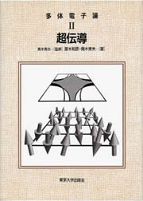
多体電子論シリーズ第Ⅱ巻の本書では、超伝導を解説する。第Ⅰ巻で述べたように、今物性物理学は一つの黄金期を迎えており、このルネッサンスをもたらした 重要な要因の一つに、「黄金の1980年代」に勃発した高温超伝導の物理がある。多くの人が指摘するように、高温超伝導の意義は、必ずしも高い超伝導転移 温度Tcではなく、多体電子論がいかに思いがけない魅惑を秘めているかを我々に開眼させてくれたことにあると言える。このような系では、電子は強く相互作 用して互いに連動して避けあっており、「電子相関」と呼ばれる。
本巻では、第Ⅰ巻『強磁性』、第Ⅲ巻『分数量子ホール効果』と同様、多体効果により生じる超伝導がいかに面白いものであるかを分かりやすく、
- 大学院生（および進んで知りたい学部生）や研究者のために、
- 磁性、超伝導、分数量子ホール効果を、各巻では独立して読めるが、3巻を通読すれば互いに関連したテーマとして理解でき、
- 基礎から最前線までself-containedに解説するが、総花式ではなく著者の物理的描像を柱にして、 解説しようとするものである。
本書では、主として銅酸化物高温超伝導体に直接あるいは間接的に関係ある問題に的を絞って解説した。そのように絞ってもなお、その領域は膨大なもの となってしまうので、本書が最も力点をおいたのは「電子間斥力から生じる異方的超伝導に関する理論的模索」である。通常、超伝導は電子間の引力によって生 じる。その引力を媒介するのは、通常は電子と格子振動（フォノン）との相互作用である。これにより、電子は2個でクーパー・ペアと呼ばれる対を構成して超 伝導となる。電子間のクーロン斥力は、この束縛対を解離する働きをするので、超伝導を破壊する（超伝導の転移温度を下げる）方向である。
これに対して、銅酸化物や重い電子系、さらには有機物質といった電子相互作用が強いとされる系における超伝導（の少なくとも一部）は、電子 間の斥力相互作用に起因する超伝導──それもギャップが波数空間において異方的に開いている異方的超伝導──である可能性が真剣に検討されている。本書で は、銅酸化物に関係すると考えられる模型を例にとって、電子間斥力起源の異方的超伝導の可能性を理論的に探る様々な試みを紹介するのが主たる目的である。
高温超伝導銅酸化物は、層状の結晶構造をしており、超伝導の本質は1枚の層が担っていると考えられることが多い。したがって、まず2次元系 の物理を詳しく解説する。理論を解説する前に、理論がどのような実験事実の説明を目指しているのかを知っておく必要があるので、第2章において層状銅酸化 物に関する実験事実を説明する。そして実験と理論をつなぐ章として、現実の物質からの理論的模型の抽出、という大事な部分を第3章で解説した。電子相関の 理論に対しては、解析的なアプローチと量子モンテカルロ法のような数値的なアプローチの両面作戦が望ましいことが多い。そこで、解析的なアプローチを第4 章で、数値的なアプローチを第5章で解説する。
一方、1次元における電子相関の研究も、理論的には、朝永振一郎が半世紀も前にプリンストン滞在中に思いついた、今では朝永－ラッティン ジャー理論と呼ばれている理論的枠組みに最近新しい光があたり、また実験的には、たとえば梯子形結晶構造を有する銅酸化物において超伝導が発見されるな ど、一大分野に成長している。そこで本書の後半では、1次元系の超伝導およびその周辺を解説する。第8章において擬1次元銅酸化物に関する実験結果を理論 の章で触れるものを中心に解説した後、弱結合からの解析的なアプローチを第9章で、厳密解や数値計算からのアプローチを第10章で解説した。そして、2次 元での物理と1次元での物理には接点があるのではないか、という点も最後に触れる。
初学者にも分かりやすくするために、上記のようなアプローチを理解する準備として幾つかのイントロダクション的な章を設けた。まず、超伝導 の発現機構に関する最低限の理論的予備知識を得るために、第1章ではフォノンを媒介とする通常の超伝導に対する、弱結合（電子・格子相互作用が弱い場合 の）理論（BCS理論）と強結合理論（エリアシュベルグ理論）を概説した。
また、第2、8章で触れるように、銅酸化物超伝導体では、超伝導相に隣接する金属相、絶縁体相にも興味深い物性があり、超伝導と深く関係し ている可能性もある。そこで、超伝導以外の物性に対する理論的アプローチに関しても、第4，5，9，10章の理論の各章で触れた。理論的手法に関しては、 他の多体問題と同じく超伝導においても、場の理論や数理物理的厳密解の理論、量子モンテカルロ法などの計算機物理学といった様々なアプローチが試みられる 中から新しい物理像を模索する、という流れが作られている。様々な数値計算の手法は、第5、10章に登場するが、それらの簡単な説明を付録にまとめた。
他の巻との関連で言えば、電子相関の中心テーマの一つは、第Ⅰ巻で解説した「強磁性」、つまり物質がなぜ磁石になるのか、という問題である が、磁性（強磁性のみならず、反強磁性も含め）の問題は、高温超伝導の電子機構が探られる過程でも新たな光があてられた。また、対称性の破れという点で も、第Ⅰ巻で解説した強磁性は、スピン空間の対称性が自発的に破れた状態である。また第Ⅲ巻で解説する分数量子ホール状態は、ある種のゲージ場理論によれ ば一種のボーズ凝縮と見なせ、本巻で解説する超伝導体のように非対角長距離秩序を伴ったゲージ対称性の破れが起きた状態といえる。超伝導も、いつでもそれ が基底状態となるのではなく、他の状態との競争に勝つ条件が整って初めてとる状態である。実際ある種の1次元系や2次元系では相図において超伝導相と様々 な磁性相が隣接して現れることがあり、その関連は興味深い問題である。
銅酸化物高温超伝導体の問題はその発見当初から比べると、実験的にも理論的にも、前例が珍しいような精力的な研究の蓄積により、本質の理解 がある程度絞られてきた実感はあるものの、とりわけ理論の収束にはまだ時間がかかりそうだと思われる。そういう意味で本書の理論の解説も、幾つかの興味深 い可能性をあげたものであることをお断りしておく必要がある。また、膨大な量の文献を網羅することは困難であり、ごく一部しか引用できなかったことも予め お断りしたい。今後も、様々な可能性が模索されると思われるが、本シリーズが21世紀に向けた発展を目指す学生・研究者の方々に資すれば著者望外の喜びで ある。
本巻は、もともと『固体物理』に誌上セミナー「多体電子論の新展開──磁性、超伝導、分数量子ホール効果──」というシリーズとして、1995年から1997年にかけ15回にわたり連載されたものの内、超伝導関連部分に基づき、それを全面的に改訂・加筆したものである。
研究の過程では多くの方々との交流に支えられてきた。本書の関連では、上村 洸、高田康民、十倉好紀、藤森淳、山地邦彦、福山秀敏、小形正男、堀田貴嗣、永長直人、秋光 純、高野幹夫、広井善二、田仲由喜夫、柏谷 聡、前田京剛、柳沢 孝、木村 敬、有田良太郎、瀧川 一、Michele Fabrizio、Heinz Schulz、Elbio Dagotto、Thierry Giamarchiの各氏との議論に感謝したい。最後に、本巻の出版に当たっては、東京大学出版会の丹内利香氏にお世話になった。
多体電子論Ⅲ 分数量子ホール効果
青木秀夫[監修] 中島龍也・青木秀夫[著]
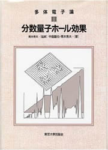
第Ⅰ巻『強磁性』の「まえがき」にも記したように、物性物理学は一つの黄金期を迎えている。このルネッサンスをもたらした重要な要因の一つは「黄金の 1980年代」に勃発した量子ホール効果の物理であろう。分数量子ホール効果は、電子が相互作用のために互いに強く避けあうという「電子相関」の効果の一 つの現れであるが、電子の演じる舞台が2次元系であるが故に、他とは異なる多体状態が出現する点でユニークである。つまり、2次元電子系に垂直な強磁場を 加えた系である量子ホール系は、単に次元が少し下がった場合というだけではなく、「分数量子化」「分数電荷」「分数統計（エニオン）」「チャーン－サイモ ンズ・ゲージ場の理論」「複合フェルミオン・複合ボゾン」「skyrmion」といった、2次元系特有の斬新な諸概念・理論と密接に絡み合ったものと言え る。実際、既に整数量子ホール効果に対して授与されていたノーベル物理学賞が、分数量子ホール効果に対しても最近（1998年秋）授与されたのは、その故 と推察される。
本書は、全3巻からなるシリーズ
- 『多体電子論Ⅰ 強磁性』
- 『多体電子論Ⅱ 超伝導』
- 『多体電子論Ⅲ 分数量子ホール効果』
の完結篇をなすものである。本巻は全2巻と同様に、多体電子論がいかに面白いものであるかを
- 大学院生（および進んで知りたい学部生）や研究者のために、
- 各巻は独立して読めるが）3巻を通読すれば磁性、超伝導、分数量子ホール効果を互いに関連したテーマとして理解できるよう、
- 総花式ではなく著者の物理的描像を柱にして、基礎から最前線までを
解説することを目指している。つまり、先端の原論文に接する手がかりを与えるとともに、introductoryな部分からの解説も含めている。
2次元電子系の物理に対する研究の歴史は長く、その発展は半導体物理学と物性基礎論のユニークな協力の賜物と言えよう。しかし、冒頭でも述べたよう に、2次元系が単に低次元というだけでなく、質的に面白いものだと認識されたのは、比較的最近の1980年代前後のことである。1980年に発見された整 数量子ホール効果、そしてその2年後の1982年に発見された分数量子ホール効果は、純粋に2次元系であるがための効果である。
2次元の何がそんなに特殊なのかを説明する一つの言い方は、次のようになろう。固体物理学で重要なテーマの一つは、膨大な自由度が存在する ために生じ得る対称性の破れであり、第Ⅰ巻で解説した強磁性および第Ⅱ巻で解説した超伝導も対称性が自発的に破れた状態である。この第Ⅲ巻で解説する分数 量子ホール状態もまた、或る種のゲージ場理論によれば一種のボーズ凝縮と見なせ、超流動対・超伝導体のように非対角長距離秩序をともなったゲージ対称性の 破れが起きた状態と言える。これは、（場の理論においては意外にも異常な次元である）空間2次元に対して導入することが許されるチャーン－サイモンズ・ ゲージ場の理論（単に「複合粒子理論」とも呼ばれる）で完結に示すことができる。
さらに、他の巻との関連を挙げてみると、上でも触れた対称性の破れに関しては、超伝導と分数量子ホール効果において破れている対称性は実は 異なったものである。しかし、分数量子ホール系においても、電子密度如何によってはBCS状態のようなペアリング状態ができる可能性も検討されており、こ の真偽は興味深い将来の問題である。また、分数量子ホール系が電子相関の故に作る強磁性状態は、第Ⅰ巻で解説した平坦バンド強磁性を思い出させるし、スピ ン編極している場合は低エネルギー励起はスピン波となるなど、分数量子ホール状態においてもスピン自由度が重要である。第Ⅱ巻『超伝導』でもスピン揺らぎ と超伝導の関連を論じた訳で、全3巻を通して、「電子相関におけるスピン自由度」という観点が一つの横糸となっている。
分数量子ホール効果はいまや膨大な分野になっており、多彩な発展性も秘めているので、この分野の全てを1冊で網羅することは困難である。ま た、文献も膨大であり、網羅的には引用できなかった。本巻では、むしろ概念的な流れを分かりやすく、また複合粒子理論にも力を入れて執筆した。また、一般 的に多体電子論では、厳密対角化などの計算機物理の手法や場の理論など、あらゆる多体問題へのアプローチが試みられる中から新しい物理像を模索するという 流れが作られている。本巻でもそれらの面を含めて解説した。ちなみに、ファインマンの最後の黒板（カリフォルニア工科大学、1988年）には、「勉強した い（to learn）テーマ」というタイトルの下に、ベーテ仮説解、近藤効果などと共に「2D Hall」という文字が見えるのが暗示的である。
本巻は、誌上セミナー「多体電子論の新展開──磁性、超伝導、分数量子ホール効果──」として、1995年から1997年の15回にわたり 『固体物理』に連載されたものに基づき、その分数量子ホール効果関連部分を全面的に改訂・加筆したものである。この分数量子ホール効果の関連でも、研究の 過程で多くの方々との交流に支えられてきており、安藤恒也、吉岡大二郎、石川健三、静谷健一、永長直人、小宮山進、家泰弘、高田康民、今村裕志、 Janaindra Jain、Allan MacDonald、Peter A. Maksym、A. Turberfield、H.Manoharan、Y.Suen、Greg Boebingerの各氏との議論に感謝したい。
結局、3巻にわたる本シリーズ全体の目的は、量子多体系が調べれば調べる程エキゾチックな香りがする、思いがけない魅惑の宝庫であることを 伝えたいことである。多体系の物理は今後どのような発展をするか予断を許さないので、本シリーズも一つの流れの記述でしかあり得ず、その妥当性については 読者のご判断・ご教示を待ちたいと思う。ちなみに強相関電子系の分野のコミュニティーでは、今後の固体物理の教科書は、伝統的なものを記述する第1部と電 子相関を記述する第2部が必要だと示唆する研究者もあるが、本シリーズは、そのような第2部のささやかな試みだと言えるかもしれない。自然科学の研究の流 れは、一種の大河小説（roman fleuve）と言えるであろうが、流れをさらに遡上することを目指す学生・研究者の方々に本シリーズが資するならば、それは著者望外の喜びである。
最後に、本書の出版にあたっては前2巻同様、東京大学出版会の丹内利香氏にお世話になった。 最後に、本巻の出版に当たっては、東京大学出版会の丹内利香氏にお世話になった。
Physics Meets Mineralogy: condensed matter physics in geosciences
edited by Hideo Aoki, Yasuhiko Syono, Russell J. Hemley (Cambridge University Press 2000)
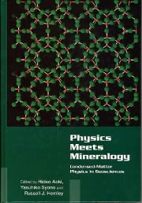
If you ask yourself 'what is the commonest material on earth?' The answer is, needless to say, rock-forming minerals. If you go back to the cosmic abundance of elements, oxygen, carbon, neon, nitrogen, magnesium and silicon are the top six (apart from hydrogen and helium,) where most of them are indeed main constituents of rocks. A goal of the modern mineralogy is to understand everything on atomic scales. This is exactly what the modern condensed-matter physics is all about. So it is natural that the condensed-matter physics should be applied to mineralogy and earth sciences, just as the particle physics is a key tool in understanding cosmology.
The present book is intended to give a state-of-the-art description of intensive interactions between geophysics and condensed-matter physics that recent years have witnessed. Although you might assume that, given the matured solid state physics, the crystal structures of materials must have been readily understood in atomistic, non-empirical terms, this naive expectation has not been, incredulously enough, satisfied until quite recently.
While traditional mineralogical principles had largely remained empirical, some people have conceived an idea that the modern theoretical solid-state physics must become the foundation of mineralogy and geophysical sciences. One of the pioneers who have realised this way of thinking is Professor Yoshito Matsui in Japan. Following the tradition of Goldschmidt, he realised the importance of identifying and characterising the underlying physics that control geochemical, geophysical, and geological phenomena over the entire P-T range relevant to the Earth. In so doing, he directed the development of new experimental high-pressure facilities with close collaboration with Dr. Eiji Ito that would be required to understand the rich and sometimes unexpected behaviour of minerals under conditions found deep within the planet.
In the tradition of Pauling, he sought a fundamental understanding of the behaviour of materials from interatomic interactions. He was among the first to apply state-of-the-art molecular dynamics to understand mineral behaviour, and to predict behaviours under extreme conditions. To this end, he and his group obtained remarkably accurate interatomic potentials for silicates now used by a large number of physicists, chemists, materials scientists, and mineralogists throughout the world.
A recent scene remembered by the international community is a successful symposium, "Computational physics in mineralogical sciences", organised by Matsui and one of the editors of this book (Hemley) at the 1992 International Geological Congress in Kyoto. The event made us feel that the "first-principles" way of looking at crystals enabled physicists and mineralogists seriously interact virtually for the first time.
Two technological advances, theoretical and experimental, play major roles here: One is the advances in the computational solid-state physics with super- and parallel-computers, the other is high-pressure geoscience. We can even make the two compete in obtaining novel crystal structures under high pressures, which was, in Matsui's words, 'the very first see-saw game between the computer science and real experiments'. The impact of the works of Matsui in collaboration with Tsuneyuki and coworkers (condensed-matter physicists) on the first-principles study of crystal structures have been noted by Sir John Maddox in an article entitled `Crystals from first principles' in 'News and Views' column of Nature (335 (1988) 201). He even added that `a demonstration of success [along this line] can rank, psychologically, with the example set by those who first climbed Everest'. This article in turn continues to be quoted (e.g., Nature 381 (1996) 648) in an urge to push the progress still further.
Although the publication of the present volume was originally planned as a Festschrift to honour Professor Matsui's accomplishments at his retirement from the Institute For Study of the Earth's Interior, Misasa, in 1997, the present volume is eventually conceived to be a standard book, covering recent investigations, contributed by outstanding researchers from both geosciences and condensed-matter physics, that can be referred to for coming decades. To help that purpose we have included an introductory chapter. Section II of that chapter highlights how major advances in the interplay between mineralogy and condensed-matter physics arose. This forms the backdrop for the articles contributed to this volume, which are summarised in section III of the chapter.
So we believe that the present volume will benefit a wide range of readers, including
- condensed-matter physicists,
- geophysicists/mineralogists,
- crystallographers,
- solid-state chemists and materials scientists.
We wish to thank all the contributors, who have made the present volume rich and of high standards. They are also indebted to Professor Shinji Tsuneyuki for his help in editing the book, and Dr Matt Lloyd for his interests in publishing this book.
Finally, to quote John Ziman in his Principles of the Theory of Solids, physicists 'have heard the music of the spheres; and yet they know that science if made for man, not man for science'. So let us finish by paraphrasing that we wish to hear the music of the globe through the betrothal of physics and mineralogy.
相関電子系の物質設計 特集号
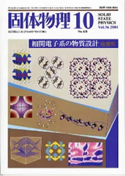
電子相関からの物質設計が何故スリリングなのであろうか。まず、歴史を振り返ってみよう。
20世紀、つまり今や前世紀の中葉の1962年に行われたLT8(低温物理学国際会議)では、BCS理論提出5年後のBardeenが Fritz London記念講演を行ったりしたが、その中でMatthiasも超伝導について発表している。固体物理最大の問題は解けてしまった、という当時の物憂 い感じがにじみ出ているが、Matthiasは様々な物質の超伝導のTcを評価した後、「ひょっとしたら全ての金属は十分低温では超伝導または(反)強磁 性になるのでは」、という予想をしている。しかし、十分低温というのは1K以下程度のことであり、理論的興味という意味が濃かった。つまり、周期律表をか なり普遍的にカバーする大きな問題は解けたが、あまりexcitingなことは待っていないだろう、という含みである。
翻って、我々は大変幸福な時代に居合わせている。つまり、この20年間の固体物理は、電子相関の時代として一つの特徴付けができるであろ う。1980年代に高温超伝導体や分数量子ホール効果が発見されて以来、電子間相互作用が思いがけない物性現象をもたらすことは、我々に驚きを与えつづけ てきた。電子相関効果とは、電子が互いの斥力のために複雑に連動するために特有な量子状態が生じることであるが、これにより固体物理のランドスケープが変 わったといえよう。変わった、という意味は、超伝導のような面白い効果が現れる温度スケール自身が桁違いに上がり、これは多分に電子相関のおかげである (高温超伝導の機構は、未だに完全なコンセンサスは無いが、ここでは話の流れ上、電子機構ということにする)。スケールのこと以上に、電子相関のもたらす 現象は多種多様である(それらのTcの高低は別としても)、ということは言うまでもない。実際、電子相関から生じる現象は多彩であり、対称性(往々にして ゲージ対称性) の自発的破れ、という統一的観点から見ることもできる。磁性、超伝導、分数量子ホール効果は皆、ゲージ対称性の破れた例である。
一方それとは別に、物質設計という概念も言われつづけてきた。「面白い(または人がコントロールした)構造から面白い物性」を目指す、とい う訳である。元来はバンド構造のような一体問題的に考えが主であったと思われるが、近年の物質開発の進歩と物性計算の方法論の発展や計算機の能力の飛躍的 な向上が相まって、現実的になってきている。
本特集号のテーマは、電子相関の物理と、物質設計という二つの概念を融合したらどんな世界が開けるであろうか、というチャレンジである。つ まり、物質設計が従来はおおむねバンド構造の設計であったのに対し、いまや電子相関を如何に発現させるかを人間がコントロールでき始めるようになってきて おり、electron correlation engineeringとでも云うべき段階にきている。実際、発端の一つである銅酸化物で既に、強相関系であるというだけでなく、ドーピング・元素を変え るなどによりコントロールできる、という点が鍵であった。したがって、多彩になった現象や、上がった温度スケールを、さらにプロモートするにはどうしたら よいか、というのは遣り甲斐のある方向ではないだろうか。「電子相関からの物質設計」の大切なアプローチの一つとして、相互作用を入れる前のバンド構造等 の特徴が電子相関の発現にどの様に関連しているであろうか、という点がある。特徴的なバンド構造に多体相互作用をスイッチオンすれば、 新奇な量子効果を生じるであろう、という問題意識である。
「東大教師が新入生に勧める本」
青木秀夫（大学院理学系研究科・理学部教授 / 理論物理学）
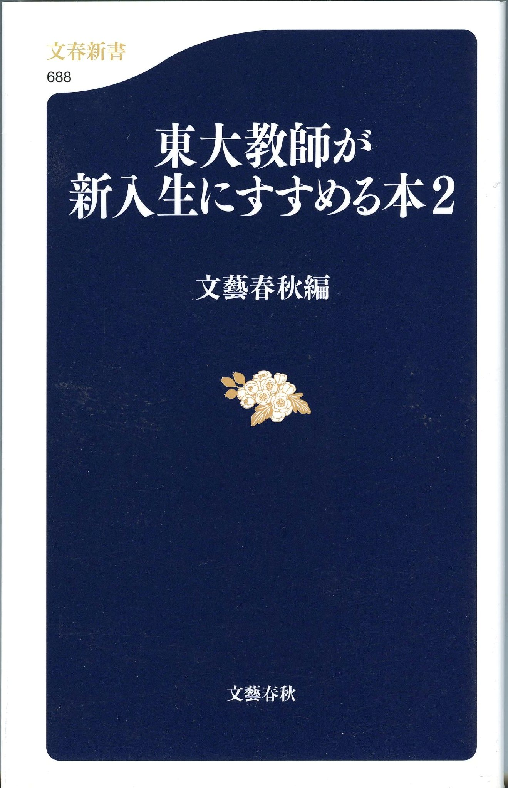
近頃の若者はあまり本を読まないのでは なかろうか。モーツァルトは「旅しない人生なんて 人生といえない」といったが、人生の冒険の一つは読書にあり。 私は、中学の電車通学以来の習慣で、今でも月に２０冊は読むので、 電車通勤（ノイズ・キャンセラー内蔵ヘッドフォン付きのCDウォークマンを 必需品として）が楽しみの時である。
私は物理学者であるが、理科系の本以外にも推薦したい本は 山のようにある。特に、今の時代、 戦後６０年で日本は、国力が衰えたのみならず、 精神まで貧しい考えが鬱病的に蔓延しているのでは なかろうか（場当たり的な評価主義、好戦主義などはその最たるものであろう）。 バブルのときは（安っぽいとはいえ）文化が 一見隆盛になりそうだったのが、それがはじけてたちまち 元の木阿弥（あるいはそれ以下）に戻ってしまった。 東京大学の学生たるもの、ここで 開き直って、高い精神性と、時代を超えて残るもの を求めてはどうか。
矢内原忠雄全集(岩波書店、1994）
今よりはるかに困難な時期の日本で本学の教養学部長、総長を 勤め、経済学者であるがその前にクリスチャンとして生きた 矢内原忠雄を若い方はご存知だろうか。戦争への路を まっしぐらにたどっていた社会との戦いで辛酸を 舐めながらも、「民族の歴史と個人の歴史」を不可分のものと したユダヤの教えを軸に、高い精神性の忘れ難い柱を 立てた。元々1977年に岩波から出版された全集（全29巻）が久しく絶版で あったのが、1994年に一部が再刊された。再刊からも十年経ち古本屋巡りをするのが 面倒な向きは、東大総合図書館にも、ロックフェラー（関東大震災 によりこの図書館が被災した際に多大な寄付をしたアメリカの 財閥）寄付によるもの（一部は矢内原恵子夫人寄贈） が収蔵されている。全８巻の内、私が好きなのは 「詩篇」である（§朝のうた、§夕のうた、§星を仰ぎて、 §山にむかひて目をあぐ、・・・）。 矢内原の系譜は 前田護郎（著書多数）元東大宗教学宗教史学教授により継がれている。
あまり固いのは苦手、という向きは、 春江一也「プラハの春」、「ベルリンの秋」（集英社、1998-1999） を是非読んでみてはどうだろうか。 これは実録に基づく、人間性とそれを破壊しようとするものとの 息詰まるドラマが全編にあふれており、こういうものを読むと、 人間というものは問題はあまりに多々あるが崇高な面も持っているという救いの思いがする。
この項では科学に関係するものを挙げよう。
ハンス・カロッサ「美しき惑いの年」 （手塚富雄訳が岩波文庫、河出書房新社等から出ている）。
カロッサは科学者ではなく医学者であるが、真摯な人生態度と 暖かい滋味をもつ必読の書。いわば、北 杜夫「どくとるマンボウ青春記」 のドイツ版。
Abraham Pais: A Tale of Two Continents --- A Physicist's Life in a Turbulent World (Oxford University Press, 1997)。
物理については、小柴先生の「心に夢のタマゴを持とう」などは 語り尽くされているだろうから、ここでは先ず、 第二次世界大戦をはさむ物理学の一つの黄金期を生きた 物理学者による自伝を挙げる。生まれはオランダであるが コスモポリタンな人間（ナチによる迫害で それを余儀なくされた）であり、アインシュタインの名伝記でも 知られる著者であるが、この本では湯川、朝永を含む 日本の物理学者のことも出てくるし、"turbulent"な世界の 大河小説として読んでも面白い。
Sir Nevill Mott: A Life in Science (Taylor & Francis, 1986).
電子立国日本の基盤の一つは固体物理学であるが、固体物理学の祖の 一人といえるイギリスの物理学者による自伝。私が若い頃(1980年代） にケンブリッジ大学物理学科（約30名のノーベル賞輩出で著名） に客員研究員として滞在したときにも、毎週のようにMott 名誉教授と議論した。また、高温超伝導の概念的な始祖でもある。 新たな学問を建設する時代（彼はherioicな時代と 呼んでいる）の息吹が描かれており、自然科学を学ぶ喜びが 生々しく感じられる。
塚田 捷編「21世紀 学問のすすめ」 第９巻「物理学のすすめ」（筑摩書房, 1997）
これは、元々「学問のすすめ」という、大河内一男、吉川幸次郎、 湯川秀樹をシリーズ・エディターとして1975年に筑摩書房から出された シリーズの現代版が20年後に刊行されたが、その中の一冊。本学の 物理学の教官を中心とした個性ある著者により、物理の面白さが躍動している。
アンドレーア・フローヴァ「ブラヴォー、ゼバスティアン --- バッハの生涯の10の場面」 （哲学書房、1996）
ローマ大学教授の固体物理学者による、バッハの伝記 (東大大学院出身の鈴木昭裕によるイタリア語からの翻訳)。 史実に基づきながらも、小説家顔負けの実に迫真的なシーンの連続する 音楽愛好家必読の書。科学と音楽は奇妙に相性が良く、 本学理学部にもセミプロ級の音楽家がいるが、 専門馬鹿の対極を行く、人生余裕と深みの好例の書。 ちなみにフローヴァは、上記のモットとも親しい。
「東京大学 その百年」（東京大学出版会、増補改訂版は1995）。
私が密かに（その必要は一向に無いのだが）愛読している本。 百年前の本学創設当時の建築写真が、何と凛として気概に満ちていることか （現在のごみごみしたキャンパスの景観からは想像もつかない）。
青木秀夫監修「多体電子論」(第I巻: 草部浩一、青木秀夫「強磁性」; 第II巻: 黒木和彦、青木秀夫「超伝導」; 第III巻: 中島龍也、青木秀夫「分数量子ホール効果」） （東京大学出版会、1998-1999）。
これは私自身の本であり、かつ専門的なものであるが、 東京大学出版会刊行なので、ここに 挙げた。固体物理学の柱のうち、磁性、超伝導、量子ホール効果 （いずれも我が国の寄与は大きい）を学部専門課程以上向きにまとめた 教科書。
Hideo Aoki, Yasuhiko Syono and Russell J. Hemley (editors): Physics Meets Mineralogy --- Condensed-Matter Physics in Geosciences (Cambridge Univ. Press, 2000).
動物行動学者ローレンツに、「人、犬に会う」という本がある。 異なる文化（この場合は人間と犬）の出会いの興奮を描いた 名著である。似たような学際的な興奮は至るところにあると 思う。理論物理学者、地球物理学者、高圧物理学者の共編になるこの本は、 造岩鉱物（つまり星の一つである地球にある石や岩）が、固体物理学的に 興味深いものの宝庫であるというメッセージを伝える。これは、 元地球内部研究センター長の松井義人氏を草分けとするものであり、 三朝にあるこの研究センターは国立であるが温泉付の粋なものである。
日本物理学会（編）：「ボース・アインシュタイン凝縮から高温超伝導へ」 （日本評論社、2003）。
物理学の中で最も面白い現象の一つが、ボース・アインシュタイン凝縮、 超流動、超伝導（これらは、ゲージ対称性の破れといういささか抽象的な 観点からは同類である）であろう。これを、一般向けに解説した 講習会「科学セミナー」の講義録であり、私も一つの章に寄稿している。
ご連絡先
〒113-0033
東京都文京区本郷7-3-1
理学部１号館
東京大学 大学院
理学系研究科 物理学専攻
青木 秀夫
Email:
aoki_at_phys.s.u-tokyo.ac.jp